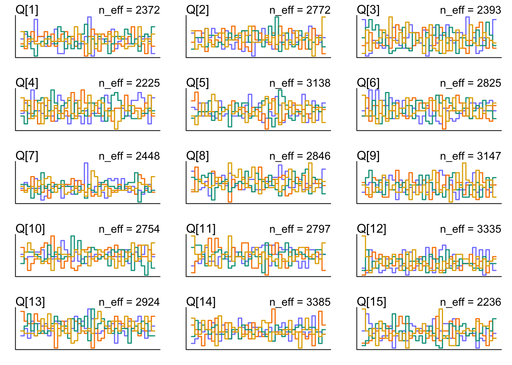
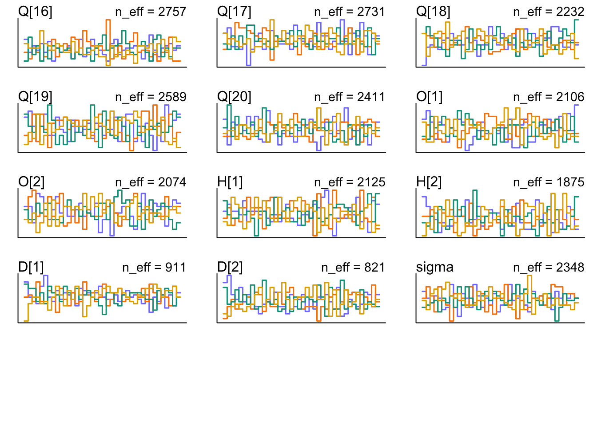
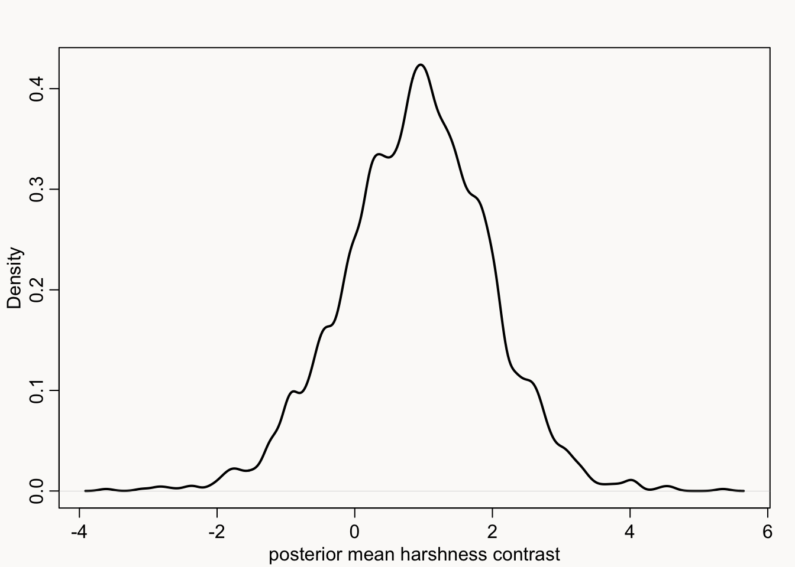
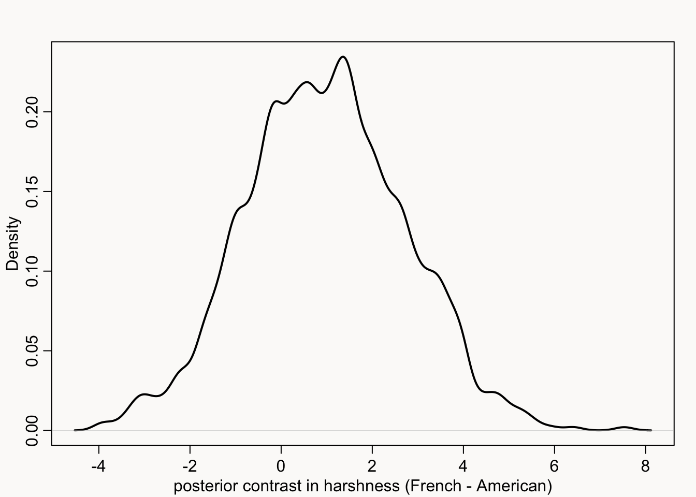
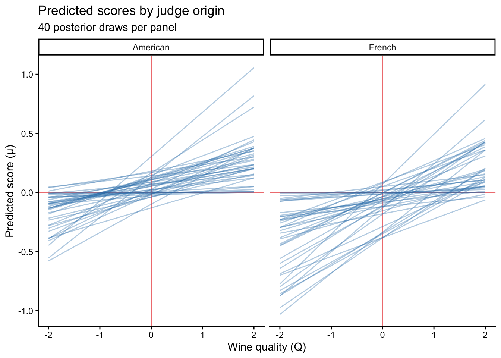

library(rethinking)
data(Wines2012)
data <- Wines2012Statistical Rethinking 2026, A08
R
causal inference
MCMC
Bayes
My solution to exercise A08 from Richard McElreath’s Statistical Rethinking course.
Link to full course on GitHub
Link to online lecture
First, we load the package and data.
Let’s have a look:
'data.frame': 180 obs. of 6 variables:
$ judge : Factor w/ 9 levels "Daniele Meulder",..: 4 4 4 4 4 4 4 4 4 4 ...
$ flight : Factor w/ 2 levels "red","white": 2 2 2 2 2 2 2 2 2 2 ...
$ wine : Factor w/ 20 levels "A1","A2","B1",..: 1 3 5 7 9 11 13 15 17 19 ...
$ score : num 10 13 14 15 8 13 15 11 9 12 ...
$ wine.amer : int 1 1 0 0 1 1 1 0 1 0 ...
$ judge.amer: int 0 0 0 0 0 0 0 0 0 0 ...The data is from a wine-tasting event, where 20 wines (10 from France, 10 from New Jersey) have been tasted by 9 French and American judges.
Now, we want to find out whether there are any differences in harshness or discrimination between French and American judges. Let’s use a DAG to think about this.
Q = Wine quality
S = Score
X = Wine origin
J = Judge preferences
Z = Judge origin
Statistical Model
The score \(S\) assigned to a wine is modeled as normally distributed around a mean \(\mu\):
\[ \text{S} \sim \mathcal{N}(\mu, \sigma) \] \[ \mu = (\text{Q}_W + \text{O}_X - \text{H}_Z) * \text{D}_Z \]
Inside the brackets, three additive components determine the underlying score before judge effects are applied: \(\text{Q}_W\) is the intrinsic quality of wine \(\text{W}\); \(\text{O}_X\) is a bonus or penalty depending on whether the wine’s origin \(\text{X}\) matches the judge’s prior expectations; and \(\text{H}_Z\) is the harshness of judge \(\text{Z}\), which shifts scores downward. This sum is then multiplied by \(\text{D}_Z\), the discrimination of judge \(\text{Z}\).
Priors
I don’t know what to expect from the model yet, so I’ll first set some default priors but I know that discrimination (\(\text{D}\)) and \(\sigma\) must be positive.
\[ \text{Q} \sim \mathcal{N}(0, 1) \] \[ \text{O} \sim \mathcal{N}(0,1) \] \[ \text{H} \sim \mathcal{N}(0,1) \] \[ \text{D} \sim \text{exponential}(1) \] \[ \sigma \sim \text{exponential}(1) \]
Prepare data
Now we need to prepare the data. This includes standardizing the outcome variable, \(\text{S}\).
data <- list(
S = standardize(data$score),
W = data$wine,
X = ifelse(data$wine.amer == 1, 1, 2), # 1 = american wine, 2 = french wine
Z = ifelse(data$judge.amer == 1, 1, 2) # 1 = american judge, 2 = french judge
)Fit model
Let’s try and fit the model:
m.wines <- ulam(
alist(
S ~ dnorm(mu, sigma),
mu <- (Q[W] + O[X] - H[Z]) * D[Z],
Q[W] ~ dnorm(0, 1),
O[X] ~ dnorm(0, 1),
H[Z] ~ dnorm(0, 1),
D[Z] ~ dexp(1),
sigma ~ dexp(1)
),
data = data, chains = 4
)show(m.wines)Hamiltonian Monte Carlo approximation
2000 samples from 4 chains
Sampling durations (seconds):
chain_id warmup sampling total
1 1 0.15 0.11 0.26
2 2 0.14 0.09 0.23
3 3 0.16 0.07 0.23
4 4 0.19 0.08 0.27
Formula:
S ~ dnorm(mu, sigma)
mu <- (Q[W] + O[X] - H[Z]) * D[Z]
Q[W] ~ dnorm(0, 1)
O[X] ~ dnorm(0, 1)
H[Z] ~ dnorm(0, 1)
D[Z] ~ dexp(1)
sigma ~ dexp(1)precis(m.wines, depth = 2) mean sd 5.5% 94.5% rhat ess_bulk
Q[1] 0.11629104 0.96340339 -1.456084593 1.6453600 1.0047851 2658.9225
Q[2] 0.04400908 0.92561682 -1.428641022 1.4661939 1.0049838 2578.9857
Q[3] 0.32062690 0.95065520 -1.217650727 1.8151464 1.0030439 2747.4948
Q[4] 0.51396119 0.96553402 -1.080761591 2.0220748 1.0028736 3072.2918
Q[5] -0.16122683 0.94072329 -1.724187120 1.3414904 1.0012999 2945.7863
Q[6] -0.34571549 0.92862388 -1.822907229 1.1667583 1.0026189 2515.9298
Q[7] 0.21406542 0.88514430 -1.220987389 1.6114017 1.0034499 2462.0700
Q[8] 0.30400983 0.92030968 -1.241985026 1.7573345 1.0011044 2774.3423
Q[9] 0.14038308 0.94714682 -1.366309164 1.6545830 1.0040941 2727.5975
Q[10] 0.18706907 0.99347001 -1.412868594 1.7538059 1.0020850 2396.3671
Q[11] 0.05370522 0.95755444 -1.585083125 1.5630776 1.0018454 2711.5164
Q[12] 0.01249112 0.88881838 -1.364113705 1.4395859 1.0010687 3010.2400
Q[13] -0.05719177 0.93532389 -1.514308232 1.4348471 1.0067436 2690.6781
Q[14] -0.05019780 0.96698162 -1.626758025 1.5303843 1.0050678 3085.6086
Q[15] -0.25168587 0.92229678 -1.692969630 1.2287367 1.0000599 2855.0401
Q[16] -0.18146878 0.93791347 -1.662019525 1.3613569 1.0014903 2893.1256
Q[17] -0.12390135 0.89872725 -1.570444222 1.2995498 0.9995688 3044.0910
Q[18] -0.77322908 0.99345076 -2.294581970 0.8626230 1.0008133 2036.0815
Q[19] -0.22113654 0.92650173 -1.672660945 1.2415881 1.0002732 2433.4569
Q[20] 0.35269928 0.96060440 -1.236770064 1.8657717 1.0021554 2495.6940
O[1] -0.30576398 0.77699573 -1.533874065 0.8969694 1.0035839 1987.8604
O[2] 0.28673543 0.85756908 -1.064942633 1.6061968 1.0020224 1894.9640
H[1] -0.44474036 0.87195865 -1.798909622 0.9316340 1.0042067 1754.7594
H[2] 0.43076045 0.82147298 -0.936103797 1.7178882 1.0009398 1583.3067
D[1] 0.11314595 0.08797777 0.009440683 0.2729922 1.0076297 540.1184
D[2] 0.13653650 0.10511174 0.012451043 0.3430607 1.0057878 649.7074
sigma 0.99245916 0.05365076 0.912290775 1.0853086 1.0022758 2235.8117trankplot(m.wines)
Waiting to draw page 2 of 2
Causal contrast
Total causal contrast in mean: wine discrimination
Code
post <- extract.samples(m.wines)
mu_contrast <- post$D[, 2] - post$D[, 1] # french - american discrimination
dens(
mu_contrast,
lwd = 2,
xlab = "posterior mean discrimination contrast"
)Total causal contrast in predicted score: wine discrimination
Code
# sample from posterior
D_A <- rnorm(1000, post$D[, 1], post$sigma)
D_F <- rnorm(1000, post$D[, 2], post$sigma)
# calculate contrast
S_contrast <- D_F - D_A
dens(
S_contrast,
lwd = 2,
xlab = "posterior contrast in discrimination (French - American)"
)Here we can see that 51.3% of the times we randomly sample a new judge, the French judge is more discriminating than the American judge. And 48.7% of the time, the American judge is more discriminating than the French judge. So it seems like there is no difference between American and French wine judges in terms of wine discrimination.
Let’s now look at harshness.
Total causal contrast in mean: harshness
Code
mu_contrast_H <- post$H[, 2] - post$H[, 1] # french - american discrimination
dens(
mu_contrast_H,
lwd = 2,
xlab = "posterior mean harshness contrast"
)
Total causal contrast in predicted score: harshness
Code
# sample from posterior
H_A <- rnorm(1000, post$H[, 1], post$sigma)
H_F <- rnorm(1000, post$H[, 2], post$sigma)
# calculate contrast
S_contrast_H <- H_F - H_A
dens(
S_contrast_H,
lwd = 2,
xlab = "posterior contrast in harshness (French - American)"
)
Here we can see that 69.5% of the times we randomly sample a new judge, the French judge is more harsh in their judgement than the American judge. And 30.5% of the time, the American judge is more harsh in their judgement than the French judge.
Lineplot
Now I want to try to recreate the lineplot that McElreath showed in his slides.
First, we need to create a sequence of wine quality (Q).
library(tidyverse)
# Simulation settings
n_lines <- 40
Q_seq <- seq(-2, 2, len = 60)
# 1 = American, 2 = French
Z_american <- 1
Z_french <- 2Now, we need a function that gets the right values out of the posteriors. We first sample indices from the posterior, so that we “decide” a priori what row from the posterior we’ll use. In the for loop, we then fill the empty list we initiated with values from the full posterior in order to get the trajectories for a given Z.
make_lines <- function(Z_val, n_lines, Q_seq, post) {
idx <- sample(nrow(post$sigma), n_lines, replace = FALSE)
results <- vector("list", length(idx))
for (i in seq_along(idx)) {
s <- idx[i] # Full posterior draw: O, H & D come from the same sample row
X_draw <- sample(1:2, 1) # random wine origin
O <- post$O[s, X_draw]
H <- post$H[s, Z_val]
D <- post$D[s, Z_val]
results[[i]] <- data.frame(
Q = Q_seq,
mu = (Q_seq + O - H) * D,
line = i
)
}
# Combine all the individual data frames into one
do.call(rbind, results)
}Now, we just call the function twice (for French and American judges) and then combine both data frames the data by row-binding it.
df_plot <- bind_rows(
make_lines(Z_american, n_lines, Q_seq, post) |>
mutate(judge_origin = "American"),
make_lines(Z_french, n_lines, Q_seq, post) |>
mutate(judge_origin = "French")
) |>
mutate(judge_origin = factor(judge_origin, levels = c("American", "French")))And now we’re ready to plot!
ggplot(df_plot, aes(x = Q, y = mu, group = line)) +
geom_vline(xintercept = 0, col = "lightcoral") +
geom_hline(yintercept = 0, col = "lightcoral") +
geom_line(alpha = 0.35, linewidth = 0.5, colour = "#2c7bb6") +
facet_wrap(~judge_origin, ncol = 2) +
labs(
x = "Wine quality (Q)",
y = "Predicted score (μ)",
title = "Predicted scores by judge origin",
subtitle = paste0(n_lines, " posterior draws per panel")
) +
theme_classic()
So: do the French and American judges actually differ in either their harshness or discrimination? Yes, they do differ in harshness. French judges tend to give lower scores in general compared to American judges. But their discrimination between wines does not differ.